Our cottages
The Cottages at Chesley Creek are a wonderful blend of seclusion and comfort. The cottages allow you to escape from daily life to enjoy the peace and quiet of nature.
The Creek House
A Romantic Creekside Cottage in Virginia’s Blue Ridge Mountains
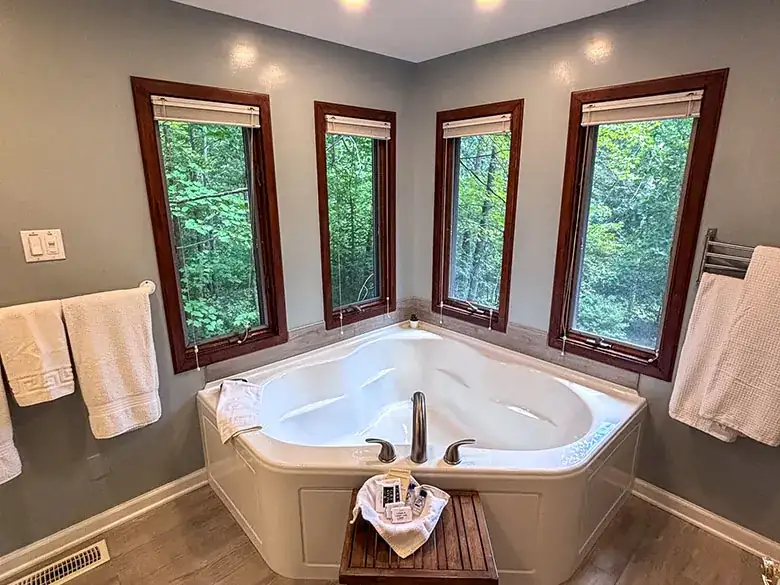
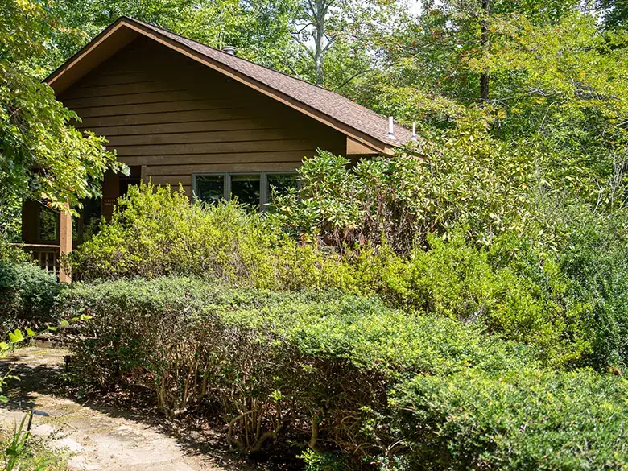
Tucked into the woods beside the water, The Creek House at Chesley Creek is a private romantic retreat for two in Virginia’s Blue Ridge Mountains. Surrounded by trees and the peaceful sounds of the creek, this cozy cottage is made for couples looking to unplug, unwind, and spend a few quiet days together in nature.
Start the morning with coffee on the sitting porch, spend the afternoon hiking our private mountain trails or exploring nearby Shenandoah National Park, then come home to soak in your couples air-jet spa tub. As evening settles in, light the gas fireplace, grill dinner on the porch, or build a fire outside and enjoy the quiet of the mountains.
The Creek House gives you permission to do something increasingly rare: nothing at all.
Amenities (13)
- WiFi
- Couples air-jet spa tub
- Queen bed
- Towels, bathrobes and linens
- Heating & air conditioning
- Gas fireplace
- Ceiling fan
- Full kitchen with coffee maker, appliances and tableware
- Private sitting porch with grill
- Outdoor hammock
- Private fire pit with firewood
- Seasonal shared saltwater pool
- Access to approximately 20 miles of private hiking and mountain biking trails
Pines
A Secluded Woodland Cottage for Two in Virginia’s Blue Ridge Mountains
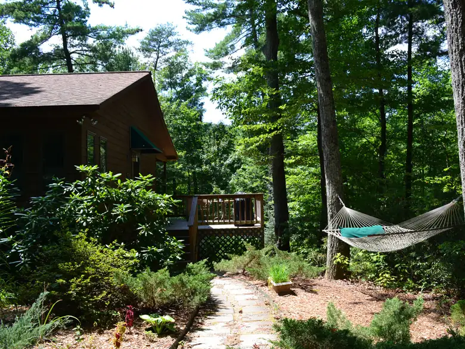
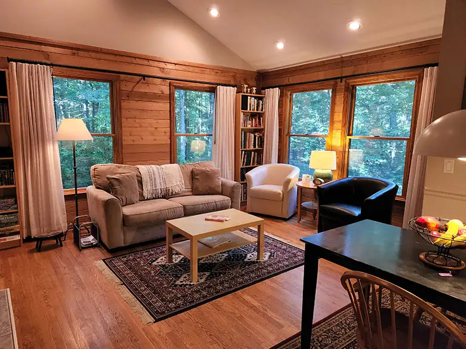
Tucked beneath the trees at The Cottages at Chesley Creek, The Pines is a peaceful, private mountain cottage designed for two. Surrounded by woods and set apart on its own private lot, it’s the kind of place where mornings start slowly, evenings end around the fire, and there’s absolutely no reason to be in a hurry.
Bring your coffee out to the porch, settle into the hammock with a book, or head out to explore miles of private hiking and mountain biking trails right from the property. After a day in the mountains, come home to a soak in the couples air-jet spa tub, light the gas fireplace, and settle in for a quiet evening together.
The Pines is less about what you have to do, and more about finally having nowhere you have to be.
Amenities (13)
- WiFi
- Couples air-jet spa tub
- Queen bed
- Towels, bathrobes and linens
- Heating & air conditioning
- Gas fireplace
- Ceiling fan
- Full kitchen with coffee maker, appliances and tableware
- Private sitting porch with grill
- Outdoor hammock
- Private fire pit with firewood
- Seasonal shared saltwater pool
- Access to approximately 20 miles of private hiking and mountain biking trails
Ridge
A Romantic Mountain Cottage with Beautiful Blue Ridge Views
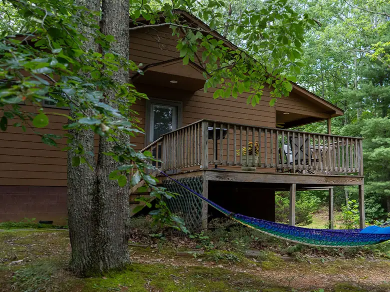
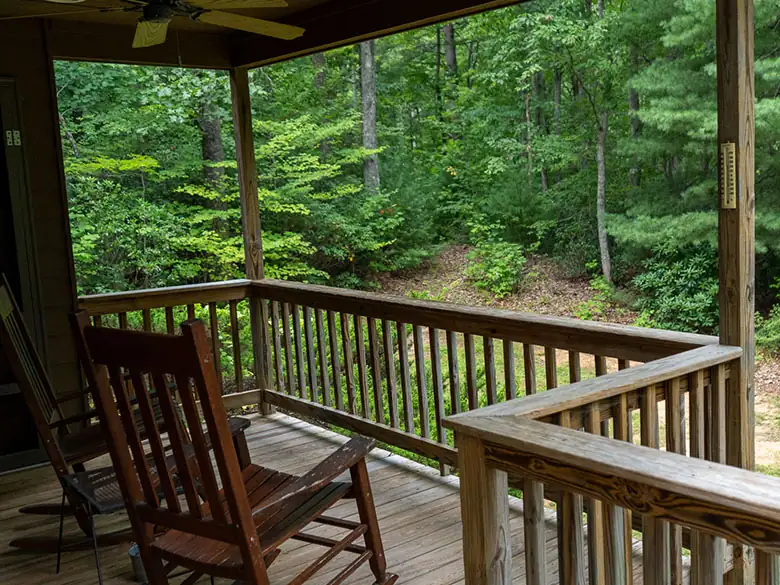
Perched in a peaceful setting at The Cottages at Chesley Creek, The Ridge is a cozy mountain cottage designed for two. With beautiful Blue Ridge views from the sitting porch, it’s an inviting place to slow down, reconnect, and enjoy the quiet beauty of Virginia’s mountains.
Begin the morning with coffee on the porch and take in the scenery from the hammock, or spend the day exploring the surrounding mountains. When you return, unwind in the couples air-jet spa tub, cozy up beside the gas fireplace, and prepare dinner together in the full kitchen.
The Ridge is a place to slow down, savor the scenery, and make time for each other.
Amenities (12)
- Newly installed WiFi
- Couples air-jet spa tub
- Queen bed
- Towels, bathrobes and linens
- Heating and air conditioning
- Gas fireplace
- Ceiling fan
- Full kitchen with coffee maker, appliances and tableware
- Sitting porch with grill and a beautiful view
- Outdoor hammock
- Outdoor fire pit with wood provided
- Seasonal shared saltwater pool
Laurelwood
A Romantic Woodland Cottage Surrounded by Mountain Laurel
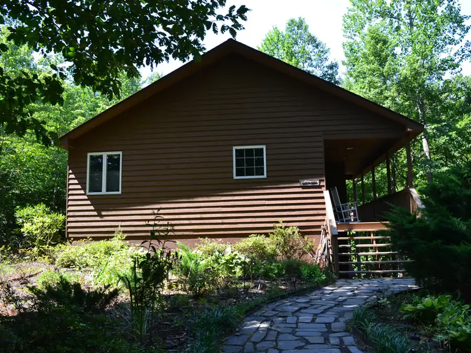
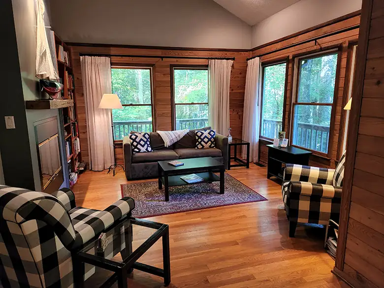
There’s a story behind the name Laurelwood. When the second cottage at Chesley Creek was built, a large patch of mountain laurel was carefully cleared to make a place for it among the trees. The name stuck, and today Laurelwood remains a wonderfully private retreat tucked into the woods of Virginia’s Blue Ridge Mountains.
Designed as a romantic getaway for two, Laurelwood invites you to slow down and settle into the rhythm of the mountains. Start your morning with coffee on the sitting porch, spend an afternoon hiking the private trails or exploring nearby Shenandoah National Park, then return for a long soak in the couples air-jet spa tub.
Laurelwood was carved out of the mountain landscape for a cottage, and became a little world of its own.
Amenities (13)
- WiFi
- Couples air-jet spa tub
- Queen bed
- Towels, bathrobes and linens
- Heating and air conditioning
- Gas fireplace, double sided
- Ceiling fan
- Full kitchen with coffee maker, appliances and tableware
- Private sitting porch with grill
- Outdoor hammock
- Private fire pit with firewood provided
- Seasonal shared saltwater pool
- Access to approximately 20 miles of private hiking and mountain biking trails
The Log House
A Blue Ridge Mountain Retreat for Two Couples, Friends & Small Groups
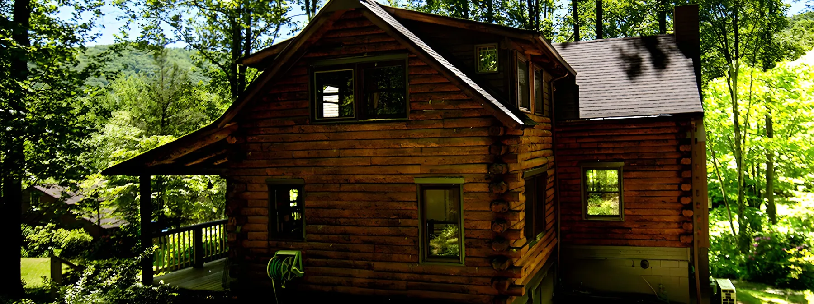
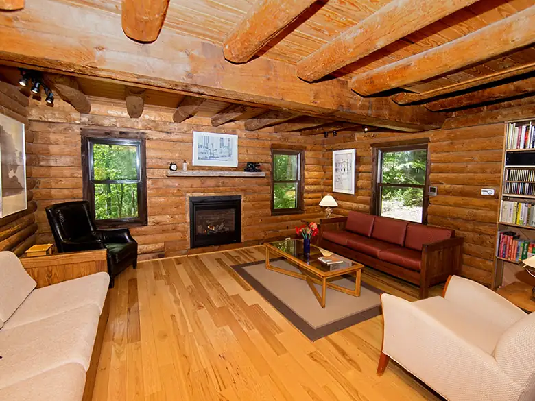
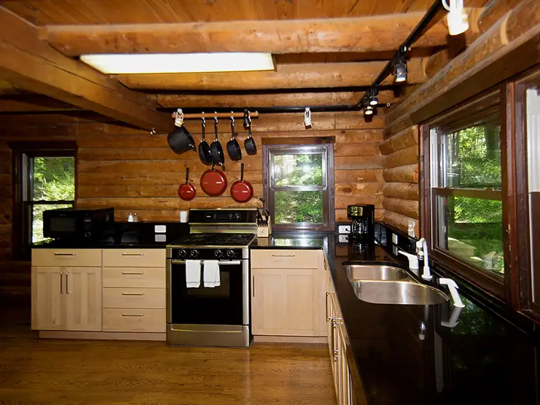
Some getaways are better shared. The Log House at Chesley Creek combines the privacy and peaceful mountain setting of our cottages with enough space for up to four guests to relax, dine, and spend time together.
Each upstairs suite is its own private retreat, featuring a queen bed, couples air-jet spa tub, private shower, and individual heating and cooling unit. Downstairs, an additional full bathroom makes sharing the house especially comfortable. Gather around the large dining table with seating for six, or settle into the living room beside the gas fireplace.
The Log House is where the Chesley Creek experience becomes something you can share.
Amenities (24)
- Sleeps up to four guests
- Two independent upstairs suites
- Queen bed in each suite
- Couples air-jet spa tub in each suite
- Private shower in each suite
- Individual heating and cooling in each suite
- Three full bathrooms
- WiFi
- Gas fireplace
- Full kitchen
- Full-size gas range with electric oven
- Large refrigerator and freezer
- Dishwasher
- Coffee maker
- Granite countertops
- Tableware, cookware and utensils
- Large dining table with seating for six
- Books, games and puzzles
- Spacious sitting porch with rocking chairs for relaxing
- Gas grill and outdoor dining table
- Outdoor hammock
- Outdoor fire pit with firewood provided
- Seasonal shared saltwater pool with the other four cottages in the lower yard
- Access to approximately 20 miles of private hiking and mountain biking trails
Come stay in a place purpose-built to commune with nature and unwind!
To check availability and book your stay, call or email Kate. Please contact us regarding availability for single-night or longer-term stays.
- Hospitality Manager
- Kate Daniels
- Phone
- (540) 850-9508
- katedaniels1@icloud.com
- Address
- Brokenback Mountain Rd, St George, VA 22935